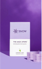
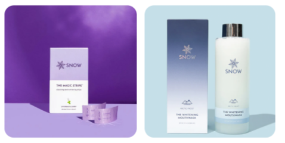

Whether it’s twisting spaghetti around the sauce at a family
get-together, sharing egg rolls in front of the TV, or
chatting over burgers at your favorite diner, we depend on our
food for more than just staying alive: Our fun times,
holidays, downtimes, and even professional events center
around eating.
Things we also do during these times— smile, laugh, and snap
pictures. However, it’s all fun until you look back and notice
a yellow or brown smile. (And no, you can't always blame it on
the camera filter or lighting.)
So, why not take advantage of the least expensive and easiest
way to get your pearly whites and confidence back? Our smiles
are all unique— and so are many whitening strips these days!
We’ve got an in-depth guide that reviews and compares the best
teeth whitening strips on the market. Our shortlist contains a
diverse selection to address all sorts of values and needs for
your smile.
Plus, we’ve included helpful tips and advice to successfully
whiten your teeth.
In this article, you can click the links and order online
TODAY to go from dull, stained teeth to show-stopping pearls—
as soon as one week.
Summary Tables
Top 4 Whitening Strips Compared

#1 Snow’s “Magic Strips”
Buy Now
|

#2 Crest 3D Whitestrips Professional Effects
Buy Now
|

#3 Zimba’s Teeth Whitening Strips for Sensitive
Teeth
Buy Now
|

#4 Lumineux Certified Non-Toxic Whitening Strips
Buy Now
|
|
Peroxide?
Yes
|
Peroxide?
Yes
|
Peroxide?
Yes
|
Peroxide?
No
|
|
Result Time
Instant
|
Result Time
Instant
|
Result Time
Instant
|
Result Time
More gradual— after 7 Treatments
|
|
Treatment time
15 minutes
|
Treatment time
15-30 minutes
|
Treatment time
30-60 minutes
|
Treatment time
30 minutes
|
|
Sensitive Friendly?
Yes
|
Sensitive Friendly?
No
|
Sensitive Friendly?
Yes
|
Sensitive Friendly?
Yes— Very
|
|
Natural or Chemical-Based?
Both— Blend of natural and chemical ingredients
|
Natural or Chemical-Based?
Peroxide & artificial-based formula
|
Natural or Chemical-Based?
Natural / Vegan
|
Natural or Chemical-Based?
Natural / Vegan
|
|
Return Policy
30 days
|
Return Policy
60 days
|
Return Policy
30 days
|
Return Policy
30 days
|
|
Google reviews
4.5 (976)
|
Google reviews
4.3 (39,000)
|
Google reviews
3.5 (516)
|
Google reviews
4.5 (3,000)
|
|
Amazon review
4.0 (710)
|
Amazon review
4.5 (68,786)
|
Amazon review
4.4 (11,634)
|
Amazon review
4.5 (6,841)
|
|
Trustpilot
4.6(1,157)
|
Trustpilot
3.2 (12)
|
Trustpilot
n/a
|
Trustpilot
n/a
|
Top 4 Teeth Whitening Strips Rated
| #1 “The Magic Strips” by Snow |
Overall Best |
Dissolvable, Unique Flavor |
|
#2 Crest 3D Whitestrips Professional Effects
|
Best Buy-Directly Bargain |
#1 Dentist Recommended |
|
#3Zimba’s Teeth Whitening Strips for Sensitive Teeth
|
Best for Sensitive Teeth |
Natural, Vegan, Ultra-Sensitive, Great-Tasting |
|
#4 Lumineux Certified Non-Toxic Whitening Strips
|
Best Luxury Brand |
Peroxide-Free, Essential Oils-Based, Non-Toxic,
Natural
|
Our Top Recommended Teeth Whitening Kits
|
#1 Glo Science Classic Glo Brilliant Whitening Device
|
LED Full Whitening Kit |
Fun, Photogenic, Effective |
|
#2 Active Wow 24K White Premium Teeth Whitening Kit
|
Best All-in-1 Whitening System |
Dentist-Level Results |
Why Whitening Your Teeth
Matters?

Featured in the
Daily Mail UK, Oral B made
a study about smiles and how they impact our lives.
Apparently, teeth impact not just how young and attractive
we look— but how much money and education others believe we
have.
According to dentists, stained natural teeth can ruin
opportunities— and even our quality of life. Here’s what
cosmetic dentist
Dr. Torrens, says about
it:
“[It’s] perhaps the first ever feature [people] notice about
us….A crucial role in forming that positive first
impression. Those who are not satisfied with the appearance
of their smile may not be enjoying life to its fullest.”
(Torrensdental.com) Ouch!
Look at the positive side: This “first impression” is
something we can brighten. By whitening our teeth, we can
take years off our appearance and have more confidence in
social situations (interviews, sales, dates, and more).
In Contrast to Other
Whitening Methods
In Contrast to Other Whitening Methods
According to the Consumer Guide to Dentistry, the national
average for in-office whitening is $650 per appointment.
That’s just the average, though— many appointments reach as
high as $1,000.
It’s a misconception that white teeth are healthier teeth, yet
the demand for whiter teeth makes it one of the most expensive
areas of dental treatments in the United States.
Every year, Americans spend millions on over the counter
whitening solutions, whitening toothpaste, whitening gel, and
other teeth whitening products.
Just right after the highest-costing option (dental office
whitening), people have the next option of whitening their
teeth at home with whitening kits.
Many of these kits are prescribed by dentists as a more
affordable option that delivers office-like results at,
perhaps, at a slower pace than the dental office. However,
these still range from $100— $400 per kit.
Plus, dental kits are not necessarily all that portable and
convenient. In other words, you typically can’t fit them in a
small handbag, trouser or shirt pocket, or notebook.
Here are the benefits of whitening strips that go beyond just
getting a brighter smile:
Affordability
The obvious choice for those who want whiter teeth— but for a
minimum cost— is to use whitening strips. According to the
Dental Health Society , a
box of 20 or more whitening strip treatments costs an average
of $30-$50.
Compared to the minimum averages of cosmetic dentist whitening
($650) and whitening kits ($100), whitening strips cost a mere
fraction.
Convenience + Ease of Use
Whitening strips now range in different ingredients and fits
available, and you can use them without any other product
involved— simply peel, stick, and wait 15 minutes to half an
hour (depending on their particular instructions).
This is great news if you have an event after work and want to
whiten your teeth's surface stains at your desk after lunch,
or else while you walk your dog in the park.
Plus, their whitening process is faster overall compared to
teeth whitening toothpastes (and especially a natural
whitening toothpaste).
Discretion
Whitening strips are discreet and almost unnoticeable. You can
drive, take the metro, walk around the store, and talk to your
loved ones while you use whitening strips— and few people will
even notice.
Portability
As mentioned earlier, whitening kits, whitening lights, and
even whitening pens require space and planning to bring with
you; however, unlike whitening pens and other whitening
products, strips can fit virtually anywhere— in your pocket,
on the plane, or under a paperclip in your notebook.
Added Safety
As long as you follow their guidelines and directions,
whitening strips are safer to keep around. They don’t require
you to keep liquid chemicals like peroxide and bleach sitting
around with which a child or infant could potentially harm
themselves.
In addition, you’re less likely to swallow and ingest large
amounts of bleaching and whitening agent chemicals with
whitening strips, in contrast to trays and kits.
.png) How We
Chose Our Top 4 Whitening Strips?
How We
Chose Our Top 4 Whitening Strips?
- Effectiveness
- Sensitivity
- Brand Responsibility
- Reviews
- Inclusivity of fit and price
The first-ever whitening strips came out over 20 years ago— in
2001, when Crest released their first ever disposable plastic
strip for whitening teeth.
Since then, whitening strips have become a major part of the
teeth whitening and dental hygiene industries. We’ve certainly
seen these evolve and expand to different varieties.
With all the clutter on the internet, we sorted through and
found strips that not only delivered the best results, but
also used safe ingredients, were trusted by users, and didn’t
cost an arm-and-a-leg.
In addition, we wanted to create an inclusive list from which
readers with different concerns, needs, and priorities could
find the ideal whitening strip. While some strips prioritize
immediate results, others protect sensitive teeth from pain.
That’s why on this list, you’ll find high-powered and
fast-acting solutions, something vegan and 100% chemical-free,
and options that are ‘semi-natural.’
We also looked for cutting-edge technology that makes strips
easy-to-use and possible for people with misaligned / missing
teeth.
Lastly, we’ve included options that are highly affordable
‘bargains,’ as well as worthy ‘spurges’ for your whitening
routine. Overall, we were thrilled to find that the best of
the best are still affordable for normal, busy people like
yourself.

The Magic Whitening Strips
-
Recommended by 8.7 out of 10 dentists (DentalAdvisor)
- Less slime & gooeyness / less plastic waste
-
Fast-acting—Get whiter teeth in as little as 9 minutes
- Professional results at a fraction of the price
Buy Now
Crest 3DWhitestrips
- Best online deal— 50% off for online purchase
- Professional-level results for less
- 4,000+ reviews, with a 4.4-star average
- No-slip grip design
Buy Now
Zimba Teeth Whitening Strips
- Vegan & natural ingredients
- Good value / bulk deals available
- Enamel-safe & sensitive-friendly
- Ultra-fast results— within the first use
Buy Now
Lumineux Teeth Whitening Strips 7 Treatments
-
Highest natural quality out of non-toxic whitening
strips
-
No hydrogen peroxide, carbamide peroxide, harsh
bleaches, alcohol, of sodium lauryl sulfate
-
Only microbiome-safe whitening strip on the market
-
14 shades of tooth whitening with NO PAIN or tooth
enamel damage
Buy Now
 How to Choose Your
Ideal Whitening Strips?
How to Choose Your
Ideal Whitening Strips?
Want to know how to get rid of yellow teeth? Here are the 5
major things to do before choosing the right strips for you:
1. Know Your Teeth Sensitivity Levels
Is it painful or uncomfortable to touch something cold (like
ice cream, ice, or even a cold beverage) to your teeth? If so,
chances are you have sensitive teeth.
If you know or think you might have mildly or severely
sensitive teeth, you’ll want to look for strips made
specifically for it.
These options will have the keywords “sensitive teeth” on
their boxes and descriptions. They’ll also more likely be
naturally-based and / or say “hydrogen peroxide-free.”
Many of these products contain a chemical called potassium
nitrate to help fight sensitivity of have a lower
concentration of peroxides.
2. See If They Align With Your Ethics
Are you vegan? Well, here’s a news flash: Not all whitening
strips are vegan.
Unfortunately, some companies test their formulas on animals;
by default, such products aren’t vegan.
If vegan and ‘animal cruelty-free’ are significant statuses
for you, make sure to buy a box of whitening strips that says
so. Otherwise, you might be using something that harmed
animals in the process of making it
3. Address Teeth Needs & Dental Health Limits.
For instance, if you have braces, you probably won’t benefit
from any whitening strips (until after your braces are
removed). In that case, you’ll need your orthodontist’s
permission to use a whitening pen.
People who wear clear aligners can use whitening strips
because they are removable and you can wear them as long as
you don’t have attachments that may interfere with the strips.
In addition, if you have recently had dental work done, such
as an implant, filling, or tooth capping, you’ll need to ask
your dentist first about using whitening strips.
Here’s a tip for tooth gaps and misaligned teeth: Teeth that
are exceptionally ‘not in alignment’ need a whitening strip
designed for flexibility and that can properly fold over teeth
that jut out from the rest.
4. Consider How Fast You Want Results.
Are you just generally wanting whiter teeth, or do you have a
special event you want to look ‘optimimal’ for?
Not all strips deliver results at the same speed or treatment
number. Unfortunately, a slower results speed typically
applies to the ‘all natural’ varieties.
Therefore, if speed is the main priority, you’ll need a
“fast-acting” / “dramatic results instantly” type of whitening
strip.
5. Be Aware of Treatment Number & the Price Per Treatment
(Overall Value)
Just because a box is cheap doesn’t mean it’s the best deal,
and vice versa.
If you plan to share your treatments with a loved one and/or
embed whitening into your regular, ongoing dental-care
routine, you’ll want to focus on the big picture and overall
value.
In other words, while an 84-pack for over $50 might seem
steep, it actually could save you significant money over time
when taking price per treatment ($0.65) into account.
#1 Snow’s “Magic Strips”
- Dissolving Strips With Sophisticated Flavors
With over 1,000,000 smiles whitened, these are called “The
Magic Strips” for two reasons:
First, they offer professional results at a fraction of the
price. Secondly, after 15 minutes, the strips themselves— not
just the stains— disappear.
In fact, many users have found that you can get results in as
little as 9 minutes a day. The 15-minute duration is actually
just the time it takes for the strips to dissolve.
The Magic Whitening Strips
$49
per pack of 28 treatments
Why These
“Magic Strips” Rock:
-
Recommended by 8.7 out of 10 dentists (DentalAdvisor)
- Less slime & gooeyness / less plastic waste
-
Fast-acting—Get whiter teeth in as little as 9 minutes
- Professional results at a fraction of the price
-
Unique lavender-mint flavor (rare among dental products)
-
Advanced, Patented P3 technology for amazing results
-
Virtually no sensitivity / formulated to be gentle on
enamel
- 99.3% customer rating
The Only
Drawbacks to “The Magic Strips”:
- Can’t swallow excess saliva during process
Users rave about Snow’s amazing taste, too. While most dental
products have boring ole plain mint, peppermint, or cinnamon
(if they’re semi-adventurous), this company offers a truly
unique, sophisticated flavor: Lavender and mint.
As a fan of lavender and a generally curious person, I was
very impressed with how this company provides a unique
experience to its customers and not just a result.
Snow has a 21-day whitening challenge: “Take our 21 day
whitening challenge - whiten for 9 mins per day, every day,
for 21 days”
Snow hasn’t been around as long as Crest and other major
dental brands; however, it’s certainly proved itself as a
dental care company, as it’s also dentist-developed.
The founder, Josh Snow, started the company in 2017. They’ve
since come out with entire lines of highly-rated teeth
whitening products, from their magic strips, to kits, mouth
washes, toothpastes, whitening gel, and more.
Snow strived to make something that delivered results
comparable to professional treatments, but in the comfort of
users’ own homes.
Snow also didn’t want to contribute additional plastic waste.
This is where these stips really stand out. Nearly 99% of
other whitening strips brands use disposable, plastic
applicators that sit half an hour on your teeth before you
plunge them into the trash and, thus, landfills and
ecosystems.
Snow users don’t worry about contributing unnecessary waste
into the environment (at least when it comes to their
whitening routines), as Snow’s Magic Strips dissolve within 15
minutes or less.
Plus, the flavor of these is also something incredibly rare in
the teeth whitening industry— lavender. Many users claim that
these are so good-tasting that they simply don’t wish to
switch to any other ‘boring and typical’ whitening strip for
this reason.
Lastly, the dentists who developed these made sure that the
magic strip works with most types of dental work like veneers
and crowns* and that they cause virtually zero sensitivity.
*We recommend consulting your dental professional for use.
With wide and inclusive selections, Snow takes care of just
about everyone— from those with tooth sensitivity, deep /
intrinsic stains, to sophisticated pallets.
Their high quality comes with the luxury price; however, their
site has frequent deals for saving money on these (up to 25%
for 6-times-a-year subscriptions).
You’ll also notice that they have entire lines of whitening
products and kits that compliment their whitening power. You
can order mouthwash, a teeth whitening pen, whitening
toothpaste, and other products that promote maximum results
with the whitening treatments, as well as promote actual
dental health (which is, after all, a more important and
separate thing from teeth appearance and whiteness).
If you’re not as ‘wowed’ as you expected, Snow has a
money-back guarantee for 30 days to return. In addition, they
offer a 5-year warranty with many of their products.
#2
Crest 3D Whitestrips Professional Effects Whitening Strips
- Best Online Deal

Crest 3DWhitestrips Professional Effects Teeth Whitening
Strips
$45
per pack of 28 treatments
In case you haven’t heard of Crest— it’s a pretty huge, long
standing brand. They’ve probably got the biggest and longest
reputation for dental care out there, second only to Oral B.
Overall, these strips pack bright results and a huge value for
a bargain if you buy them online— 50% discount for online
buyers.
Instead of their regular $90 price for 40 treatments, you can
get them for $45 here.
Here’s Why
Crest 3D Whitestrips Lead the Game:
- Best online deal— 50% off for online purchase
- Professional-level results for less
- 4,000+ reviews, with a 4.4-star average
- No-slip grip design
- Results-guaranteed— 2-month return policy (60 days)
- #1 Dentist recommended
The Only
Drawbacks of Crest 3D Whitestrips Professional Effects:
- Don’t always reach “in between” areas of teeth
- Not ideal for ultra-sensitivity
While you shouldn’t expect literally the same quality as going
to the dentist’s office, these have proven to deliver powerful
results.
Competitors like Colgate Whitening Strips simply can’t compete
with Crest’s best whitening strips. From 4,000 users and the
most dentists recommending them, you can safely consider
Crest’s 3D Whitening Strips Professional Effects high-quality
and trustworthy.
A favorite feature is their “no slip grip.”
While many whitening strips come with a slimey, sliding
plastic applicator, Crest’s uses a special formula that makes
the gel stay in place and not slide around your teeth and
gums.
This makes for a more convenient, hassle-free experience when
you want to casually whiten your teeth at home. You can add
their whitening toothpaste, whitening gel, and other teeth
whitening products to your routine to support the whitening
process with the strips.
While that no-slip-grip formula holds its place and prevents
discomfort, this also means that the gel is so solid inside
these that it’s not getting through to the small, inner cracks
in between your teeth.
When applying these, you’ll need to make sure that you gently
take your fingernail and press into the outside of the strip
into those “cracks” between your teeth.
Otherwise, the serum in the strips is so solid that it won’t
reach, and you could have slightly yellow / darker areas in
between your teeth as a consequence.
While they still don’t last quite as long or work quite as
deep as a dental office whitening session, these take care of
coffee, wine, tea, and dark food stains with consistent use.
These powerful effects mean that you won’t want to leave them
on longer than the instructions suggest— 30 minutes. If you do
that, your teeth and gums could become sore and uncomfortable.
If you have tooth sensitivity, you’ll want to cut the wait
time in half or so to 15 minutes.
You can rest assured that these guarantee enamel-safe
technology (as long as used within the time recommendations).
#3
Zimba Teeth Whitening Strips for Sensitive Teeth
- a Natural, Vegan-Friendly Bargain on Amazon
Zimba Teeth Whitening Strips for Teeth Sensitive Vegan
White Strips for Teeth Whitening
$54
per pack of 28 treatments
This is a personal favorite of mine on this list. Not only is
Zimba fully vegan, but it also uses natural ingredients like
coconut oil to deliver instant, enamel-safe results.
Here Are the
Best Features of Zimba Teeth Whitening Strips:
- Designed for sensitive teeth
- Vegan & natural ingredients
- Good value / bulk deals available
- Enamel-safe & sensitive-friendly
- Ultra-fast results— within the first use
-
Advanced technology to fit all teeth alignments / sizes
Here are the
Only Drawbacks of Zimba:
-
Must use for 14 consecutive days for long-term results
- Contains natural hydrogen peroxide
If you’re wanting a brighter smile but are conscious about
chemicals and your enamel, Zimba is the ideal natural,
sensitive-friendly option.
This pack includes EIGHTY-FOUR strips in their three top
flavors (minty teeth, wintergreen teeth, and spearmint teeth).
Yes— you read 84 right!
Zimba uses natural ingredients like coconut oil to get you
fast results without causing discomfort or taking off your
enamel.
Since this pack is so generous and they’re sensitive-friendly,
you can use these as often as you want for up to 60 minutes
per session.
They’ll also last you a year or more— even if you decide to
share them with a partner. That’s even taking into account
their only downside— needing to wear them 14 consecutive days.
While they boast brighter teeth in just one session, the
high-contrast, long term results require you to use them for 2
weeks straight. After that, though, you can enjoy the results
for up to 6 months.
This 84-pack is a great deal, as an individual has enough to
do this 30 minutes a day, 2-week program every 2 months (or 6
times in one year). At the same time, a couple will have
enough to do it every 3 months (or 4 times together in one
year).
With Zimba, you’ll get pearly whites while protecting yourself
and enamel from harsh chemicals. Plus, you’ll only need to buy
these one time to be fully set for an entire year.
Don’t forget that these also don’t slip, and they conform
comfortably to all smile sizes and alignments. Check them out
here.
This is a personal favorite of mine on this list. Not only is
Zimba fully vegan, but it also uses natural ingredients like
coconut oil to deliver instant, enamel-safe results.
#4
Lumineux Certified Non-Toxic Whitening Strips
- Luxury You Can Afford Via Amazon
Lumineux Teeth Whitening Strips 7 Treatments
$22.99
per pack of 28 treatments
For those of you who want certified, 100% realness and zero
toxins— Lumineux teeth whitening strips are made for you!
Our Favorite
Things About Lumineux Teeth Whitening Strips:
-
Highest natural quality out of non-toxic whitening strips
-
No hydrogen peroxide, carbamide peroxide, harsh bleaches,
alcohol, of sodium lauryl sulfate
- Only microbiome-safe whitening strip on the market
-
14 shades of tooth whitening with NO PAIN or tooth enamel
damage
Why They’re
Not 100% Perfect:
- Have caused temporary “white spots” for some
- More gradual results
These take care of your general oral health with transparent,
natural ingredients like coconut oil, lemon peel oil, sage
oil, and dead sea salt.
Besides these rare, PRONOUNCEABLE ingredients in these, they
also do something rare among whitening strip brands:
They protect your microbiomes (the natural balance of “good”
bacteria in the mouth necessary for oral health). Therefore,
they don’t use hydrogen peroxide or carbamide peroxide to do
the job.
This essential-oils-based whitening option packs the same
convenience and ease as the more typical whitening strips but
without the peroxide, harsh bleaches, or alcohol.
The main thing to keep in mind for these is that because
they’re made from essential oils, you’ll need a little
patience.
Because it’s so natural and more gentle, you’ll need to use as
directed and not expect dramatic, overnight results like other
brands.
Some people have reported temporary white spots on their teeth
after the very first use; however, this has shown to be a
temporary issue (most due to the natural base) and resolved
itself within the next use or a day.
The kit comes with 7 treatments (14 strips in total), and
users love their unique, essential-oils-based flavor! Learn
more about them here.
🎁 Bonus: Our Top 2 Best Teeth Whitening Kits
While this is a list for whitening strips, we’ll be honest and
say, “Yes— sometimes.”
Strips are more specific, disposable solutions for whitening
your teeth that you unwrap, place on your top and bottom rows,
and wait for the instructed amount of time.
People typically use strips either every-now-and-then
maintenance and before special events.
Teeth whitening kits, on the other hand, range more in their
forms, benefits, effectiveness, and price. They also tend to
deliver faster, yet more gentle, results using LED lights,
serums, and trays.
Here are a couple of top-rated teeth whitening kits that we
thought you might also like:
Snow’s Tooth Whitening Kit
Classic Glo Brilliant Teeth Whitening Device
This whitening solution is worth every penny and—
not to mention— fun to use and take pictures
$199
4.0
(99)
Active Wow 24K White Premium Teeth Whitening Kit
Premium Teeth Whitening Kit
Active Wow delivers fantastic results and harnesses
the power of LED lights technology for dental
office-like results.
$39.99
4.9
(12,649)
How to Successfully Whiten Teeth
You’re wanting a glow-up and to brighten up those pearly
whites. Well, we’ve got some advice to make sure you do it
safely and get the maximum results with these awesome
products we’ve listed.
Best Time to Use
Teeth Whitening Strips
The best time to whiten teeth is typically the evening—
after you’ve consumed your final beverages and food for the
day. This is because dark-toned foods and drinks can
actually stain your teeth with worse discoloration than
before if you do so right after a whitening session.
The “White” Diet

This is exactly what it sounds like— a diet of white, or
color-less, foods and beverages.
Is it practical for the long term? Definitely not.
Is it necessary right after you finish a whitening session?
Most of the time— yes, and at the very least, it helps.
After your whitening session, try to eat a “white diet” in
the following 1 to 3 days.
After you use whitening products, your teeth are actually
most susceptible to gaining new stains (ironic, right?).
For help or inspiration on the ‘White Diet,’ here’s a
helpful guide courtesy of Docklands Dental.
Teeth Whitening for
Sensitive Smiles

Does your face wince up when you try to bite into ice
cream?
Does the mere thought of biting into ice give you chills
and phantom pain?
If so, you likely have sensitivity and should focus on
products that protect your enamel and build strength.
Whitening products that promote safe bleaching and protect
your teeth from sensitivity with a low concentration of
hydrogen peroxide or contain potassium nitrate is your
best option.
When it comes to whitening sensitivity, the typical
chemicals (such as hydrogen peroxide) can be incredibly
discomforting.
According to
Medical News Today,
hydrogen peroxide acts as a bleaching agent to lift stains
and ‘whiten’ your teeth. For teeth whitening, the hydrogen
peroxide levels range from 10% to even 40% concentrations.
While dentists and scientists debate hydrogen peroxide’s
long term impact on enamel, hydrogen peroxide is known to
cause mild or even severe sensitivity to teeth.
If you already have sensitivity, this added discomfort and
pain could get unbearable— making it difficult for hours
or even days to be able to drink and eat.
You’ll want to stick to brands that are
sensitive-friendly, hydrogen peroxide-free, and without
other harsh bleaching agents.
For the most ideal precautions, choose a natural brand and
use them for half the recommended time per session to make
sure they don’t trigger your sensitivity.
A last bit of advice goes towards gum health: If your gums
bleed easily or get inflamed, you’ll want to choose a
natural whitening strip.
Why? Most of the classic bleaching agents (like hydrogen
peroxide) can inflame your gums worse and even cause a
burning sensation. Opt for a natural, sensitive-friendly
whitening strip like Lumineux.
How to Fix Yellow
Teeth [For Good]
If you have stubborn, yellow stains on your teeth, you’ll
need to consider consistent whitening treatments and,
perhaps, some lifestyle changes and dentist consultations
for this issue.
Whether it’s the main, most common culprits like coffee,
wine, smoking cigarettes, and dark veggies and fruits,
you’ll need to start cutting and adding certain habits.
Limiting or quitting smoking and coffee consumption is
overall beneficial to your health, and the staining will
discontinue to worsen if you do so.
One habit you should add is to brush your teeth after
consuming colorful drinks and foods. Another is to
consistently practice your whitening routine (daily until
recommended treatments finish) and to repeat this every few
months.
If proper and consistent use of whitening strips doesn’t
deliver the results you want, you may need to opt for more
intense treatments like whitening kits or get a professional
whitening procedure at your dentist’s office.
FAQ (Frequently Asked Questions)
For most cases, the best time to use whitening
strips is the evening.
Because you need to avoid consuming dark foods or
beverages right after you use your whitening
strips, it’s best to time it out after you’ll be
consuming food and drink.
This is because taking dark foods and beverages
such as beets, wine, or coffee after whitening can
actually create stains darker than what you had
before the whitening strips.
For most people, the ideal time is the evening or
else after breakfast and coffee in the morning.
Dentists officially recommend Crest 3D Whitening
Strips more than any other brand.
If you analyze it by ‘stars’ received, combined
with the number of reviewers on major platforms
like Google Review and Amazon, Lumineux has the
best reviews (4.5 stars on both Google Reviews and
Amazon).
Rather than sporadic, right-before-event usage,
the best way to use whitening strips is
consistently and by their directions.
Popping one in a couple hours before a special
occasion is okay; however, consistent, daily usage
(following the suggested time / directions and
until treatment is complete) will deliver the
best, longest-lasting results.
In addition, you’ll want to lightly brush your
teeth with just a toothbrush and water 10 or so
minutes before using your whitening strips. This
will remove debris and plaque on your teeth and
enable the whitening ingredients to more evenly
apply to your teeth.
You also should avoid consuming anything
dark-colored for at least 12 hours after doing a
whitening treatment.
For sensitive teeth, you’ll want whitening strips
specially-designed for them and that are
naturally-based.
Because of their natural formulas, Zimba (natural
with hydrogen peroxide) and Lumineux (vegan,
natural, and hydrogen peroxide-free) are ideal for
sensitive smiles.
Can I brush my teeth after using whitening strips?
This question largely depends on the instructions
and suggestions of the brand you use. In general,
while it’s typically ‘okay,’ it’s best to follow
the advice of your whitening strip.
You could end up taking off the serum too early
and/or irritating your gums!
Since it’s recommended to not eat (or at least not
eat colorful foods and beverages) afterwards, the
evening after your last meal of the day is ideal.
However, take caution when using them at night. If
you fall asleep and accidentally wear them
overnight. This can be dangerous to your gums,
enamel, and general health.
(WARNING— Don’t fall asleep with your whitening
strip on!)
Conclusion
Our smiles are the first thing people see about us (in most
cases). Even for those with sensitivity, allergies, and
restrictions— there’s a whitening strip to boost anyone’s
confidence.
As you’ll notice, ordering online saves you money, allows you
more information and research, and makes it easier for you to
return products if you’re not completely satisfied.
Just remember that while these strips and products will boost
confidence and ‘glow-up’ your teeth’s appearance, they don’t
replace actual dental professional care / advice or good
hygiene.
In the end, we put all these top whitening strips through the
toughest test: Now, here’s how they hold up against one
another:
7 Sources Cited
Last updated on August, 2022
All content within this article is fact-checked and
medically-reviewed by dentists, orthodontists, and dental
professionals, so that the information readers get is current,
relevant, and— most importantly— true.
We keep strict guidelines when it comes to sources and only
cite from up-to-date research, such as medical journals,
dentistry textbooks, government agencies, scholarly articles,
and other expert-peer-reviewed content. This includes but
isn't limited to the American Association of Orthodontics
(AAO), American Dental Association (ADA), American Academy of
Pediatrics (AAP), and National Library of Medicine (NLM).
1. "A Clinical Study of the Effectiveness of a Light
Emitting Diode System on Tooth Bleaching." Roche Hayward,
Yusuf Osman, and Sias R. Grobler, 2012 Sep 20.
2. "The Effect of Hydrogen Peroxide Concentration on the
Outcome of Tooth Whitening: An In Vitro Study." M. Sulieman,
M. Addy, E. MacDonald, J.S. Rees, 2004.
3. "Effectiveness of Sodum Bicarbonate Combined With
Hydrogen Peroxide and CPP-ACPF in Whitening and
Microhardness of Enamel." Fazaneh Ahrari, Nadia Hasanzadeh,
Omid Rajabi, and Zakiyeh Forouzannejad, 2017 Mar 1.
4. “Effectiveness of Whitening Strips Use Compared With
Supervised Dental Bleaching: A System Review and
Meta-Analysis.” G.d. Rosa, B.M. Maran, V.L. Schmitt, A.D.
Loguercio, A. Reis, and F.S. Naufel, 2020 Nov1 .
5. “Erosion and Abrasion on Dental Structures Undergoing
At-Home Bleaching.” F.F. Demarco, S.S. Meireles, H.R.
Sarmento, R.V.F. Dantas, T. Botero, and S.B.C.Tarquino, 2011
Jul 18.
6. “Influence of Professional Teeth Whitening on Oral
Hygiene: Long-term Results.” N. Vlasova, V. Samuezenkov, I.
Novikova, D. Nikolenko, N. Nikolas, and M. Knyazeva, 2021
Jul 30.
7. “Teeth Whitening: How It Works and What It Costs.”
Addleson, Larry, 2019 Apr 18.
Written by
Kat Hillman
Kat Hillman is an expert writer on travel, beauty,
spirituality, food, and general things that make life more
interesting. When she’s not writing, she’s trotting the
globe, playing with her dog, Nina, or helping online
startups with their marketing.
Want to connect with Kat? Follow her on
LinkedIn.


.png)